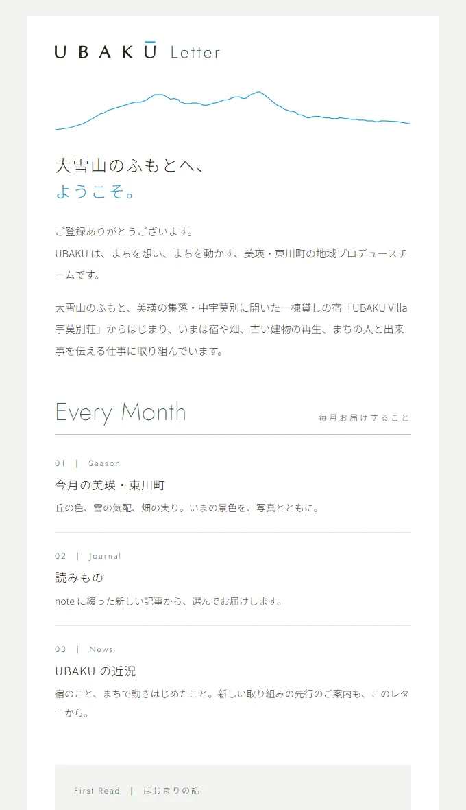
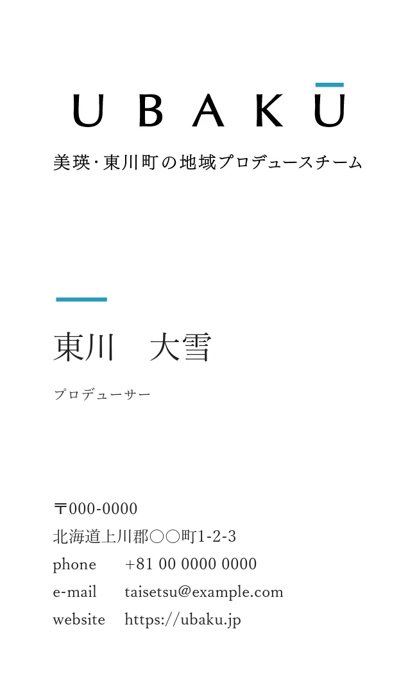
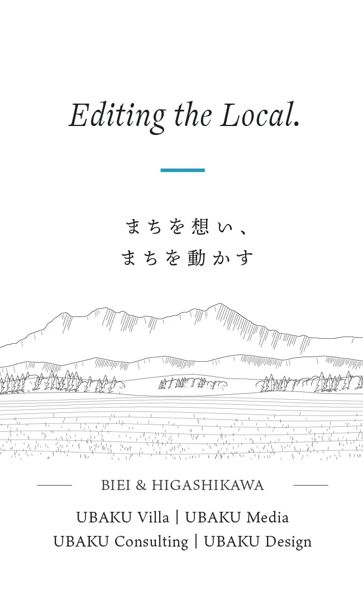

The brand of UBAKU, regional producers in Biei and Higashikawa, Hokkaido. Lodging, design, consulting, vegetables, media. We made rules for showing many businesses under one name, and brought everything together from visual design to the website and newsletter. ubaku.jp launched in October 2026.
Question
Can many businesses be told as one brand?
01
Origin | Starting where it began
It began with lodging, then grew into design, consulting, vegetables, and media. As the work spread, how should we decide the name and logo of the team? There were many ways to think about it. This time, we started from where it all began: UBAKU Villa 宇莫別荘, in Naka-Ubakubetsu, Biei.
02
Approach | Telling them apart by the Ū bar
The name comes from the community of Naka-Ubakubetsu, and became the thin-lettered logo UBAKŪ. Only the bar over the Ū changes color by business, so lodging, consulting, design, and vegetables can be told apart within one brand. The rules for type and color run from business cards to the website and newsletter.
UBAKU
Consulting
Design
Market
System | The color of the Ū bar changes by business
BrandVisual identity
Web | ubaku.jp

Newsletter | UBAKU Letter
Logo
Green
UBAKU
Consulting
Design
Market
System | The color of the Ū bar changes by business
#29463DForest green#23A0DAHigashikawa blue#77428DEdo purple#CA7A2CAmber#B4553ARed earth#F4F4F2Snow white
Color
What We Do
Jost Light | English headings
大雪山のふもとで
Murecho | Japanese headings
まちを想い、まちを動かす。
Noto Sans JP | Body text
Typography


Business Card (name and address are samples)
Learning
One name, many colors.
This region is full of interesting people from many backgrounds. We want the businesses of UBAKU to spread just as colorfully. That wish lives in the rule that changes the color of the Ū bar by business.
You want to make use of an old building, turn it into a lodging or shop, or refine how your shop presents itself. Even an idea that has not taken shape yet is welcome. We reply to English inquiries by email.